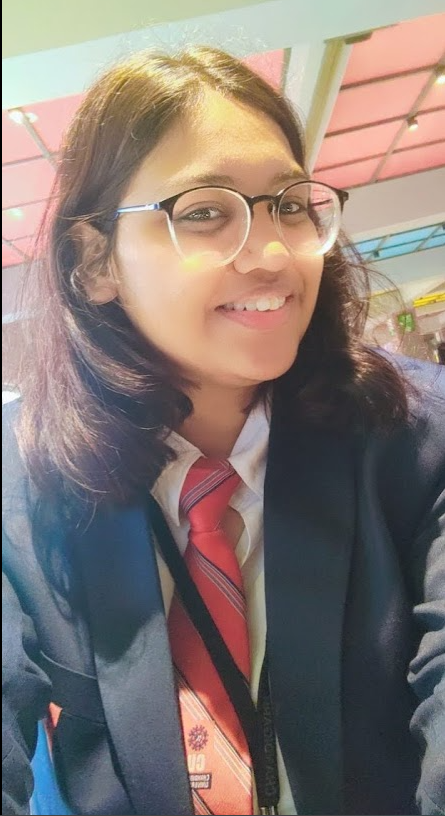

Aastha Joshi
Contact Information
Email: aasthajoshi890@gmail.com
LinkedIn: Aastha Joshi
GitHub: trewilljo
Objective
Motivated and detail-oriented computer science student with a passion for software development and cloud computing. Seeking an internship opportunity to apply my skills in programming, web development, and problem-solving in a dynamic team environment.
Education
RSV higher Secondary School(10th Grade)
- Percentage: 72%
- Year of Passing: 2020
RSV Higher Secondary School (12th Grade)
- Percentage: 77%
- Year of Passing: 2022
Chandigarh University, 2022 - 2026
- Bachelor of Computer Science and Engineering specialization in cloud computing
- Current CGPA: 7.4
Skills
- Programming Languages: Python, Java, C++
- Web Development: HTML, CSS, JavaScript
- Databases: MySQL
- Version Control: Git
- Soft Skills: Communication, Teamwork, Problem Solving
Projects
GUI Game For Disabled Person(2022-2023)
As a Creative/graphic designer,I designed accessible game character and interface for a game that can be played by disabled persons.
Technologies: Python, Tkinter
A SaaS Website(For Drawing And Wireframing)(2023-2024)
Developed a SaaS website that allows users to create and share drawings and wireframes online.
Technologies: HTML, CSS, JavaScript
Achievements And Certification
- Microsoft Certified: Azure Fundamentals
- Exam 1Z0-1127-24:Oracle Cloud Infrastructure 2024 Generative AI Professional
- Introduction To Data Science-Linkedin Learning
- Network Defence- Cisco
- How to write and Publish a Scientific paper